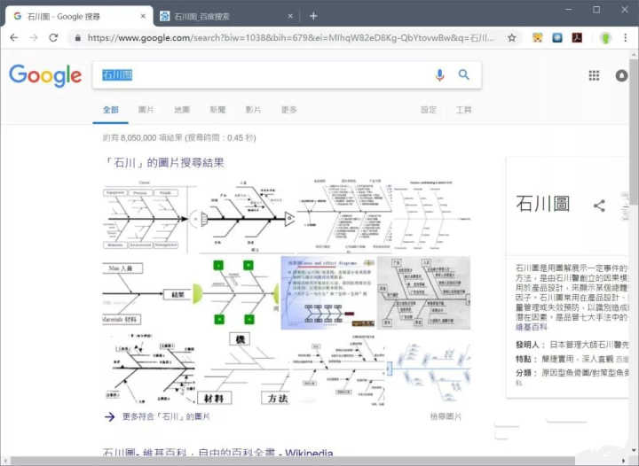

我的第一份工作是 Android 攻城师，做了有两年左右，发现自己平时的工作几乎都是在设计页面布局，这不是我理想的工作（我的理想工作是不上班 [/ 坏笑]）。因为经常和 Java 后端人员接触，感觉他们工作挺炫酷的，敲几行代码，在浏览器输入一个地址，就能打开一个自己设计的网页，简直太牛 P 了。因此决定向 Java 后端发展。之后又有爬取数据的需求，有利用业余时间学习了 Python。每当接触一门新的编程语言时，都感觉自己进步飞快。
刚接触时，真的是什么都不懂，首先是三大框架 SSH（Struts、Spring、Hibernate），知道的同学请举个手，现在几乎都是 SSM 框架的天下了（Spring、SpringMVC，MyBatis）。
一路走来搞懂了什么是 JSP？什么是 Servlet？什么是拦截器 / 过滤器？什么是 Socket 通信？什么是数据库操作？什么是事务？什么是分布式？什么是分布式事务？....... 终于明白了，什么叫 “一入编程深似海”
学习这门语言的最初动力就是做爬虫，直接在 w3school 和 菜鸟教程 简单学习了语法，就开始试着用 Scrapy 的爬虫之旅。中间为了实现自己的爬取目标，又学习了许多必要的知识。你需要搞明白：xpath 选择器、css 选择器（了解其中一个即可），数据的下载、图片的保存，线程数量的配置......
提示：不要惧怕任何编程语言，它没有你想像的那么难，就是规则
just do it !
独自完成一个相对完成的项目，这点可以让你更全面的了解项目的构成。我在做自己的一个独立项目时（项目名称不方便透漏，还请谅解），需要自己去了解前端方面的知识，如 html/css/jsp/jquery 等，作为后端人员适当的学习前端知识还是很有必要的。如今前端都在向后端侵透，我们不侵透下前端都感觉对不起后端这个称呼。
如今的技术已经发展的比较成熟，你所遇到的 80% 的技术难题，已经有人遇到过并帮你找到好的解决方案了，所以要学会使用关键词进行搜索查询。
有很多问题你会发现在百度查不出来，翻了七八页也没有找到好的解决方案。这个时候建议你用 Google 试试，一般答案就在前两页内。（大家都说百度是一家广告公司，不是我说的）
来两张对比图，客观自行对比吧：

我也是从百度开始的，但搜索结果不对比不知道，之前遇到过一个问题，在百度翻了近 10 页都没有找到自己想要的答案。抱着试试的心态去 Google 试了下，在第 1 页中就找到了答案。
关于百度的更多内容可以看这个回答：为什么有人说「百度全面降低了中国的互联网体验」？
总之，如果你有梯子，请远离百度，使用 Google。
第一次读设计模式相关的书籍，也就混个脸熟，具体什么用处，怎么用？都没搞明白
二刷设计模式书籍，算搞明白了单例模式、适配者模式、工厂模式等所能起到的作用
三刷设计模式，已经间隔了两年，再看才明白其中的道道，设计之精巧。也学会设计模式你真不能称为一位合格的程序员。
设计模式（Design Pattern）是前辈们对代码开发经验的总结，是解决特定问题的一系列套路。它不是语法规定，而是一套用来提高代码可复用性、可维护性、可读性、稳健性以及安全性的解决方案。
设计模式对每一位编程人员来说都是一把利剑，没认真学过的同学请回家自行阅读学习。
曾经不止一次，有人建议我多看看源代码，但是我一直不以为意，因为一直以来的原则就是，我们是站在巨人的肩膀上的，到时候会调用就行了。
阅读源码之后觉得好像得到了某种内功心法，查看源代码一方面可以了解看的东西具体是如何实现的（所用的算法、数据结构等），另一方面也可以学习代码的架构。这对编程人员以后的发展很重要，很重要，很重要。
编程这个行业是很特殊的。之所以说特殊，就是因为它所有的技术大多来自欧美，所以最主流，最新鲜，最正确的技术文章都是英文，遗憾的是，大部分还没有译本。你现在能看到的译本都是基于译者对这个技术的理解进行翻译的，中间难免会有偏差。
学好英语你可以和世界各地的程序员在 Stack overflow，Reddit 和 Github 进行交流，以码会友。作为工作多年的老鸟，大家自然知道内推的好使程度，要是拿到了公司的录取，那么什么签证都是浮云。
如果你想掌握最前沿的技术，那么从英文文档开始吧。
“不积跬步，无以至千里”，希望未来的你能：有梦为马 随处可栖！加油，少年！
关注公众号:「Java 知己」，每天更新Java知识哦，期待你的到来！